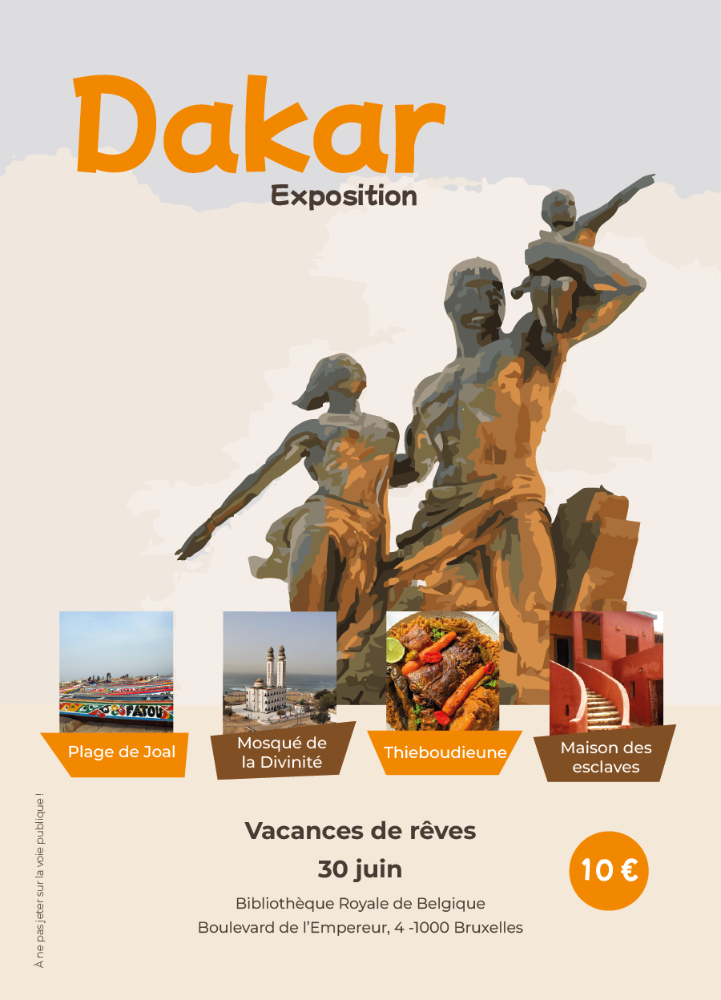

Vacances de rêves
HongKong
L’objectif était de concevoir une affiche pour promouvoir une exposition dédiée à une ville ou un
pays.
Le visuel devait évoquer l’idée de “Vacances de rêve” à travers quatre thématiques clés et des
images
attractives.
L’affiche devait également communiquer clairement les informations essentielles : le lieu de
l’exposition, la date et l’idée qu’il s’agit bien d’un événement à découvrir.
Moodboard

Résultat :

Dakar
Pour cette seconde affiche, l’objectif était de reprendre le même style graphique que la première
afin de créer une identité visuelle cohérente pour l’exposition.
L’enjeu principal était de conserver une homogénéité : mêmes codes, mêmes intentions, même
atmosphère visuelle.
L’idée était de travailler comme avec un template : reprendre les éléments clés du premier visuel et
les adapter à un nouveau contenu, tout en gardant une signature graphique reconnaissable.
